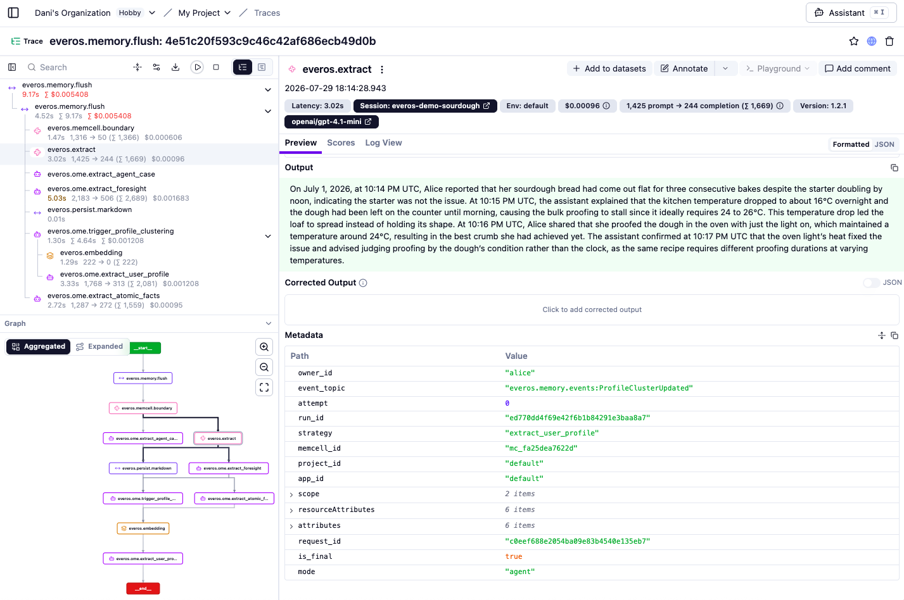
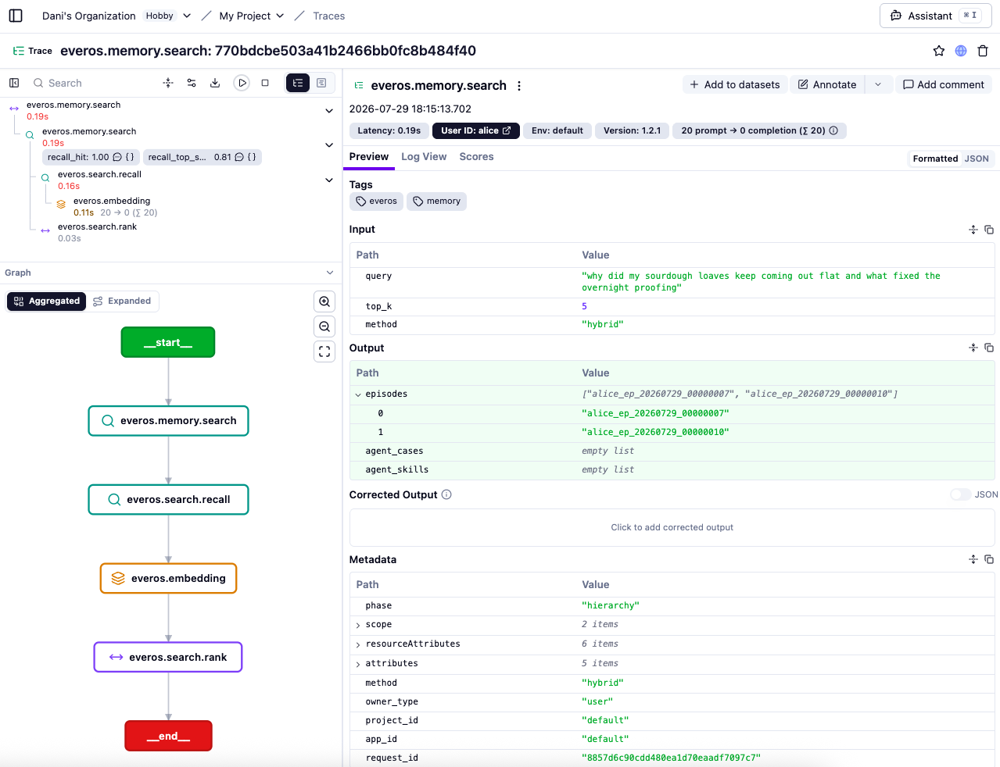
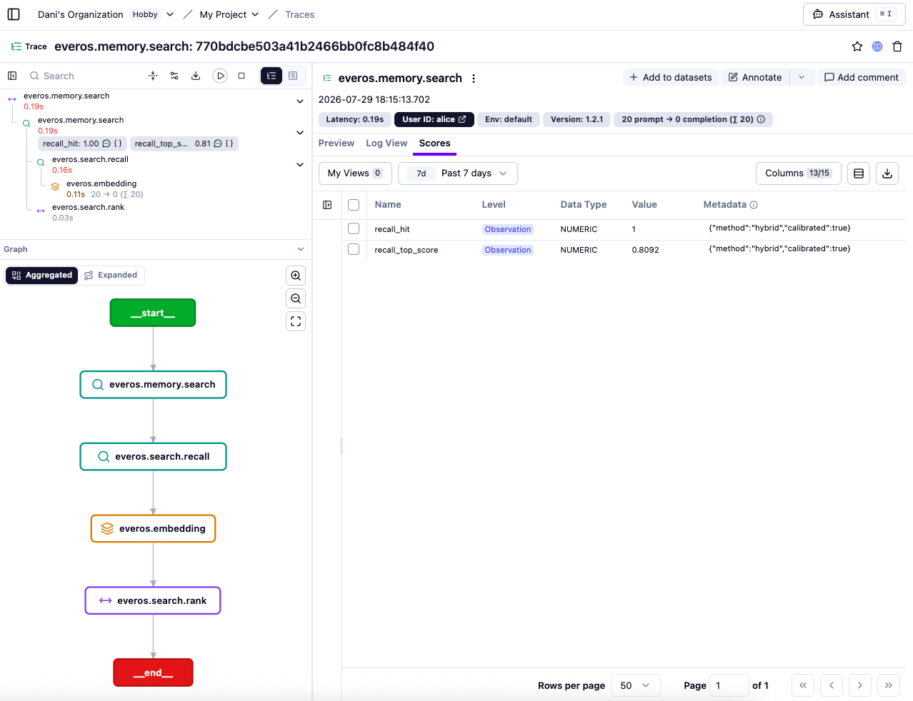

Tracing agent memory operations in Langfuse with EverOS
X 原帖
Memory is the one layer of the agent stack observability often can't see.
EverOS now speaks OTel natively, so memory operations land in Langfuse: what got stored, what got recalled, how confident that recall was, how conflicting memories got merged, and what it cost.
关联官方文档快照
Memory is the one layer of the agent stack that observability usually can't see. This integration makes an agent's memory operations visible in Langfuse: what got stored, what a question recalled, how confident that recall was, when two memories were reconciled into one, and what all of it cost.
EverOS emits OpenTelemetry natively as of 1.2.0. There is no wrapper and no instrumentation code to write: enable it in your config and the traces appear.
EverOS is an open-source (Apache-2.0), local-first memory runtime for AI agents. Conversations and agent trajectories are extracted by an LLM into user profiles, episodic memories, agent cases and reusable agent skills; stored as human-readable Markdown; indexed in SQLite + LanceDB; retrieved via hybrid BM25 + vector recall with reranking; and consolidated over time by an offline reflection engine. It runs as an HTTP service (pip install everos).
Langfuse is the open-source platform for LLM observability, evaluation, and prompt management. It ingests OpenTelemetry traces natively, so any system that speaks OTLP, including EverOS, shows up next to the rest of your agent's traces, with model-usage and cost views, scores, and dashboards.
A write. The memory EverOS distilled from the conversation is the output of the everos.extract generation. Boundary detection, extraction and each reflection strategy carry their own tokens and cost, so the price of remembering one thing is itemised rather than lumped together.

A read: the question, what came back, and the recall-quality scores on the retriever observation.

The scores themselves, each tagged with the retrieval method that produced it.

Every figure above is a real trace, not a mock-up. To get an interactive one in your own project, replay the recording the EverOS repo ships (below) — no EverOS install required.
* The memory lifecycle as trace trees.flush → boundary → extract → persist, with the reflection strategies fanning out behind it, and search → recall → rank with the query embedding nested inside recall. Every stage timed and costed.
* The cost of remembering. LLM and embedding calls are generation and embedding observations carrying model and token usage, so Langfuse computes cost in its model-usage views. EverOS sends no cost of its own.
* Recall quality over time. Each search attaches two numbers: how relevant the best hit looked, and whether that cleared a threshold. These are useful to plot and trend, but they are proxies, not ground-truth relevance. For real relevance evaluation, run an LLM-as-judge over the query and recalled content in the trace.
* Conflicting memories getting resolved. When two memories say different things about the same subject — a plan that changed, a preference that was updated — reflection merges them and retires the outdated one, which then stops coming back from search. This is the part of a memory system that usually happens invisibly, and it is the hardest to debug when it goes wrong. Here it is an observation of its own, inside the write that triggered it.
* Filtering by conversation and by user. Write traces are tagged with the conversation they belong to, so Langfuse groups a whole conversation into one session. Search traces record whose memory was searched, so you can filter searches by user.
Each EverOS API call becomes one Langfuse trace, with the server-side pipeline stages as typed child observations:
| EverOS operation | Langfuse observation | What becomes visible |
| --- | --- | --- |
| POST /api/v2/memory/add · flush | span everos.memory.add / everos.memory.flush | the whole write in one trace, with its total time and cost |
| memcell boundary detection (LLM) | generation everos.memcell.boundary | model + tokens spent finding a memory's edges |
| episode extraction (LLM) | generation everos.extract | the memory that was written, model + tokens |
| Markdown persistence | span everos.persist.markdown | the .md file it landed in |
| POST /api/v2/memory/search | retriever everos.memory.search, over everos.search.recall and everos.search.rank | query → episodes returned, plus the recall score |
| query / recall embedding | embedding everos.embedding | embedding model + tokens |
| reflection and extraction strategies | agent everos.ome.<strategy> | which strategy ran, model + tokens |
| consolidating related memories | span everos.reflect.consolidate | memories merged, and outdated ones retired |
Reflection runs after the request that triggered it has already returned, but its spans still land inside that request's trace instead of a separate one. So a write and everything it set off in the background stay in one place, and you can tell which write caused which piece of work.
Recall quality is pushed to the Langfuse scores API, attached to the search observation. Calibrated and uncalibrated retrieval methods report under different score names, because their values are on different scales and averaging them together would be meaningless. The span and score reference in the EverOS repo lists the exact names and what each one means.
Try it without installing EverOS
The EverOS repo ships a recording of a real run under examples/langfuse/, plus a script that replays it into your own project. Span names, attributes, token usage, structure and durations are the server's own output. Ids and timestamps are rewritten so repeated runs do not collide, and each trace gets a replay tag so a recording is never mistaken for live traffic.
pip install opentelemetry-sdk opentelemetry-exporter-otlp-proto-http
export LANGFUSE_PUBLIC_KEY="pk-lf-..."
export LANGFUSE_SECRET_KEY="sk-lf-..."
export LANGFUSE_HOST="https://cloud.langfuse.com" # 🇺🇸 US: https://us.cloud.langfuse.com
python replay.pyOpen your Langfuse project and filter on the replay tag.
Point your own EverOS at Langfuse
Install the OpenTelemetry extra and add one config block. The Langfuse keys derive the OTLP endpoint and auth for you:
pip install "everos[otel]"
[observability]
enabled = true
langfuse_public_key = "pk-lf-..."
langfuse_secret_key = "sk-lf-..."
langfuse_host = "https://cloud.langfuse.com" # 🇺🇸 US: https://us.cloud.langfuse.com
# capture_content = true # opt-in: also record query and extracted memory textEvery field has an EVEROS_OBSERVABILITY__* environment variable equivalent for containers and CI, and langfuse_host can point at a self-hosted Langfuse instead of the cloud. Tracing is off by default, and with it off there is no overhead.
Privacy. Traces carry metadata only by default — latency, token counts, model names, scores. Recording the query text or the extracted memory itself is opt-in via capture_content, with a redaction hook you can install for what does get recorded. Turn it on deliberately.
To bring up a server, follow the EverOS quickstart.
Drive some memory through it
everos server start
python demo.py # from examples/langfuse/demo.py uses only the standard library and contains no instrumentation code — the spans come from the server. It ingests a handful of conversations, triggers reflection, and asks questions of the resulting memory.
* EverOS on GitHub
* Integration example and span/score reference
* Raven, the self-improving agent harness built on EverOS
* Langfuse OpenTelemetry docs
You can use this integration together with the Langfuse SDKs to add additional attributes to the observation.
No observations appearing
First, enable debug mode in the Python SDK:
export LANGFUSE_DEBUG="True"
Then run your application and check the debug logs:
* OTel observations appear in the logs: Your application is instrumented correctly but observations are not reaching Langfuse. To resolve this:
1. Call langfuse.flush() at the end of your application to ensure all observations are exported.
2. Verify that you are using the correct API keys and base URL.
* No OTel spans in the logs: Your application is not instrumented correctly. Make sure the instrumentation runs before your application code.
Unwanted observations in Langfuse
The Langfuse SDK is based on OpenTelemetry. Other libraries in your application may emit OTel spans that are not relevant to you. These still count toward your billable units, so you should filter them out. See Unwanted spans in Langfuse for details.
Missing attributes
Some attributes may be stored in the metadata object of the observation rather than being mapped to the Langfuse data model. If a mapping or integration does not work as expected, please raise an issue on GitHub.
Once you have instrumented your code, you can manage, evaluate and debug your application: